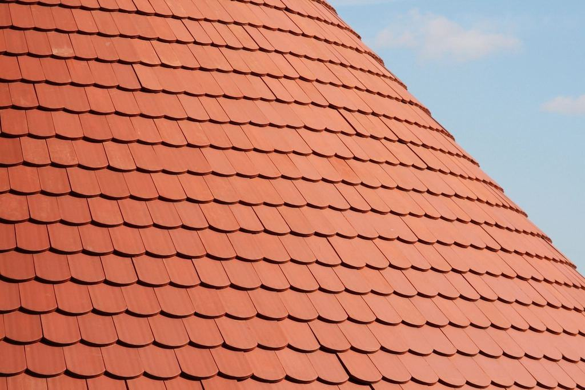
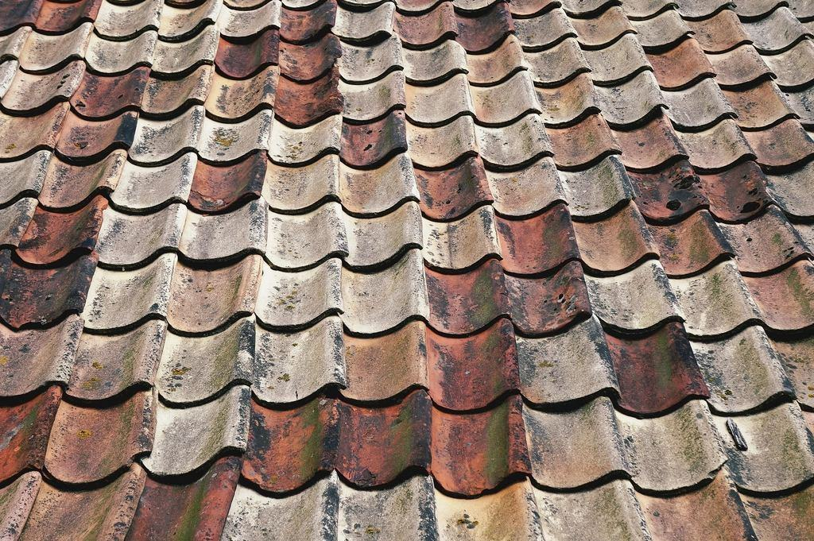
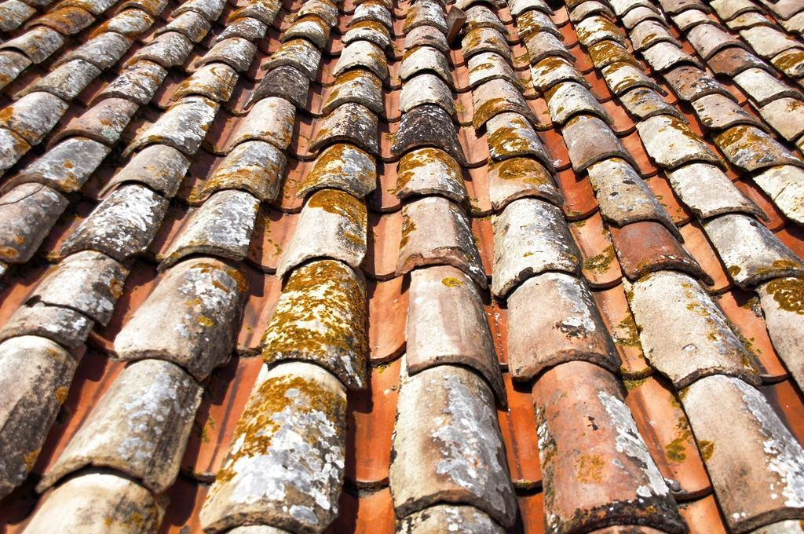

Om Rönnby Rökgas
Rönnby Rökgas startades 1988 av sotarmästaren Gunnar Fält, som började mäta koloxid och syrehalt i stadens pannrum långt innan det blev ett krav. När miljöbalken kom 1999 byggde hans son Henrik upp ett mätlaboratorium vid sidan av sotningen, och sedan 2009 är vi ackrediterade av Swedac.
Vi mäter utsläpp, sotar pannor och skriver miljörapporternas underlag åt värmeverk, industrier och fastighetsägare med förbränningsanläggningar i Mälardalen.
Rönnby Rökgas startades 1988 av sotarmästaren Gunnar Fält, som började mäta koloxid och syrehalt i stadens pannrum långt innan det blev ett krav. När miljöbalken kom 1999 byggde hans son Henrik upp ett mätlaboratorium vid sidan av sotningen, och sedan 2009 är vi ackrediterade av Swedac.
I dag är vi 38 anställda med lab och verkstad i Rönnby, Västerås. Hälften av oss arbetar med mätningar och rapporter, hälften med sotning och rengöring av pannor och rökgaskanaler. Våra kunder är närvärmeverk, sågverk, pelletsfabriker, sjukhus och fastighetsägare med egna pannor i Västmanland, Uppsala län och Södermanland.

Ett mätlaboratorium med sotare
Rönnby Rökgas startades 1988 av sotarmästaren Gunnar Fält, som började mäta koloxid och syrehalt i stadens pannrum långt innan det blev ett krav. När miljöbalken kom 1999 byggde hans son Henrik upp ett mätlaboratorium vid sidan av sotningen, och sedan 2009 är vi ackrediterade av Swedac.
Senaste nytt

Så planerar ni sotning och emissionsmätning så att pannan bara står en gång.

Med två vagnar kan vi mäta på två anläggningar samma vecka under högsäsong.

Vi har skickat underlag till 46 anläggningar – nu är det dags att granska.
Beskriv anläggningen
Skriv effekt, bränsle och när nästa stopp är planerat. En mätingenjör återkommer med förslag inom tre arbetsdagar.
- Telefon
- 070-174 06 78
- E-post
- lab@ronnbyrokgas.se
- Öppettider
- Mån–fre 7–16, revisionsstopp även helger
Kontakta oss
- Kontor
- Rönnbyvägen 63
723 46 Västerås - Telefon
- 070-174 06 78
- E-post
- lab@ronnbyrokgas.se
- Öppettider
- Mån–fre 7–16, revisionsstopp även helger